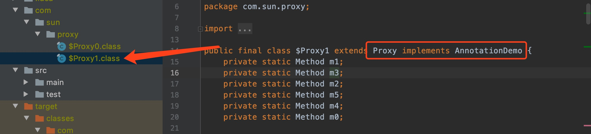

上一篇讲了讲动态代理，这一篇要说一说注解。随着Spring的流行，笔者在开发的过程中，无时不刻在使用注解，那么了解注解，就成了必须要学会的知识，会用，了解原理即可。不过学到哪种程度呢，就需要见仁见智了。说一点题外话，Java的东西太多了，精通所有的东西，看过所有的源码，几乎是不可能的，所以自己就看自己的需求了，学习到那种程度就自己掌握吧。
注解简单用法
直接上代码来说，比较简单，Spring虽然已经不提倡使用这种方法，但是由于方便，还在经常使用。
1 |
|
类、方法、属性上，都可以使用注解，这几种注解的作用，都比较容易理解。
以前没有注解的时候，使用xml来干这些个事，后来项目越来越大，xml也越来越庞大，不容易维护，所以出现了注解，带来了便利性，但是增加了耦合。
注解是啥？
要了解注释是什么东西，就需要了解这个类：java.lang.annotation.Annotation这个类的注释说了，所有的注解，都是这个类的子类。看下@Override的源代码：
1 | //源代码 |
@Target和@Retention都是元注解，说到注解，这东西你可以认为就是一种特殊的语法，要去解析这个语法才有意义，元注解不多，一共有下面几种：
- @Target：注解的作用目标
- @Retention：注解的生命周期
- @Documented：注解是否应当被包含在 JavaDoc 文档中
- @Inherited：是否允许子类继承该注解
注解和注释差不多，都是一种语法，提示编译器可以对源代码进行某些处理。
注解原理？
看到了JDK的自带的注解，那么开始写一个自己的注解吧
1 | //可以在方法上加的一个注解。 |
我们假设开发一个注解，可以给方法加。首先，设置一个虚拟机启动参数，用于捕获 JDK 动态代理类(注解原理是什么，大家是不是有个了解了？如果不太懂动态代理，可以看看我的前一篇文章JAVA新手必须要会的01～动态代理)。
-Dsun.misc.ProxyGenerator.saveGeneratedFiles=true
然后写一个类来测试下：
1 | package com.husd.framework.annotation; |
运行之后，可以在当前目录看到生成的动态代理文件

这里我们又一次加深了对于动态代理的理解。
看到这里，是不是对于注解底层是怎么实现的，又有了更深的理解了呢？知识是一环扣一环的，了解了底层的知识，在学习其它上层知识的时候，必然会轻松许多。JAVA新手必须要会的01～动态代理
总结一下：
- 可以给注解属性赋值 @AnnotationDemo(val = “this is a test”)
- JDK底层通过动态代理实现了注解。
- 注解是个接口。
- 注解有作用范围，可以是方法、类、属性。
全文完。